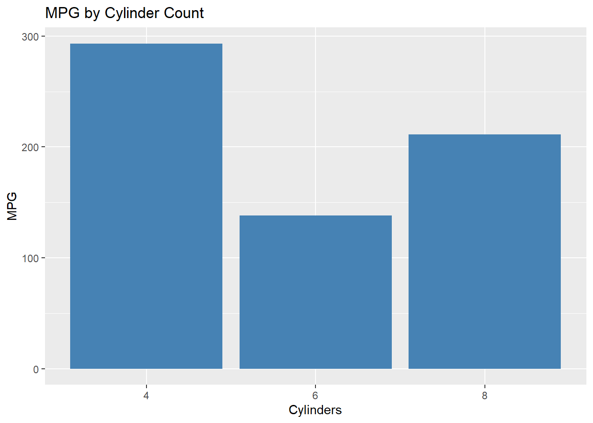

# Install core packages from CRAN
install.packages("tidyverse") # data manipulation & visualization
install.packages("vegan", repos = "https://cloud.r-project.org")
install.packages("readr", repos = "https://cloud.r-project.org")
install.packages("sf", repos = "https://cloud.r-project.org")
install.packages("lubridate") # date-time utilities
install.packages("stringr") # string manipulation
install.packages("purrr")R Packages
R Packages for Data Science
Packages in R are collections of functions, data, and compiled code that extend base R capabilities. We will cover installation, loading, essential package ecosystems, and practical examples.
1. Installing Packages
Selecting a CRAN mirror
Before installing, ensure you have a CRAN mirror set. When you first invoke install.packages(), R will prompt you to choose a mirror. Select one geographically close to you for speed.
install.packages("pkg")downloads source or binary from CRAN and installs it into your library (usegetwd()if you’re unsure where your default library is located).To specify a mirror programmatically, we use: repos = “https://cloud.r-project.org”
2. Loading Packages
Once installed, load a package with library() or require():
library(tidyverse) # dplyr, ggplot2, tidyr, readr, purrr, etc.── Attaching core tidyverse packages ──────────────────────── tidyverse 2.0.0 ──
✔ dplyr 1.1.4 ✔ readr 2.1.5
✔ forcats 1.0.0 ✔ stringr 1.5.1
✔ ggplot2 3.5.1 ✔ tibble 3.2.1
✔ lubridate 1.9.4 ✔ tidyr 1.3.1
✔ purrr 1.0.4
── Conflicts ────────────────────────────────────────── tidyverse_conflicts() ──
✖ dplyr::filter() masks stats::filter()
✖ dplyr::lag() masks stats::lag()
ℹ Use the conflicted package (<http://conflicted.r-lib.org/>) to force all conflicts to become errorslibrary(vegan) # community ecology toolsLoading required package: permute
Loading required package: latticelibrary(readr) # fast data import
library(sf) # spatial data handlingLinking to GEOS 3.13.0, GDAL 3.10.1, PROJ 9.5.1; sf_use_s2() is TRUElibrary(lubridate) # date-time parsing
library(stringr) # string processing
library(purrr) # functional pipelineslibrary(pkg, quietly = TRUE)loads without startup messages.conflicts()lists any masking of functions from different packages.
3. Essential Package Ecosystems
tidyverse
A coherent suite designed for data science by Hadley Wickham and team: - dplyr: Data manipulation grammar (filter(), select(), mutate(), summarise(), arrange()). - ggplot2: Grammar of graphics for plotting. - tidyr: Tools to reshape (pivot_longer, pivot_wider). - readr: High-performance data import (read_csv, read_delim).
tidyverse Example
# Import a CSV via readr
# df <- read_csv("path/to/file.csv")
# Using built-in iris dataset as tibble
df <- as_tibble(iris)
# Chain operations with dplyr
df_summary <- df %>%
filter(Sepal.Length > 5) %>%
group_by(Species) %>%
summarise(
mean_sep = mean(Sepal.Length),
sd_sep = sd(Sepal.Length),
count = n()
)
# Display summary
df_summary# A tibble: 3 × 4
Species mean_sep sd_sep count
<fct> <dbl> <dbl> <int>
1 setosa 5.31 0.223 22
2 versicolor 6.00 0.467 47
3 virginica 6.62 0.593 49# Create a scatter plot with ggplot2
ggplot(df, aes(x = Sepal.Length, y = Petal.Length, colour = Species)) +
geom_point(alpha = 0.7) +
labs(title = "Sepal vs Petal Length by Species")
vegan
Community ecology and multivariate statistics: - diversity(x, index = "shannon"): Shannon diversity index. - metaMDS(x, distance = "bray"): Non-metric multidimensional scaling. - rda(x, y): Redundancy analysis (constrained ordination).
vegan Example
# Load datasets
library(vegan)
data(dune)
data(dune.env)
# Calculate Shannon diversity by site
div_shannon <- diversity(dune, index = "shannon")
print(div_shannon) 1 2 3 4 5 6 7 8
1.440482 2.252516 2.193749 2.426779 2.544421 2.345946 2.471733 2.434898
9 10 11 12 13 14 15 16
2.493568 2.398613 2.106065 2.114495 2.099638 1.863680 1.979309 1.959795
17 18 19 20
1.876274 2.079387 2.134024 2.048270 # Perform NMDS ordination
nmds_res <- metaMDS(dune, distance = "bray", k = 2)Run 0 stress 0.1192678
Run 1 stress 0.1192678
... Procrustes: rmse 2.760631e-05 max resid 7.918863e-05
... Similar to previous best
Run 2 stress 0.1183186
... New best solution
... Procrustes: rmse 0.02027082 max resid 0.06495998
Run 3 stress 0.1886532
Run 4 stress 0.1192678
Run 5 stress 0.1192678
Run 6 stress 0.192224
Run 7 stress 0.1192678
Run 8 stress 0.1809579
Run 9 stress 0.1192678
Run 10 stress 0.1192679
Run 11 stress 0.1192678
Run 12 stress 0.1192678
Run 13 stress 0.3770267
Run 14 stress 0.1192679
Run 15 stress 0.1808911
Run 16 stress 0.1183186
... Procrustes: rmse 8.295968e-06 max resid 2.447404e-05
... Similar to previous best
Run 17 stress 0.1183186
... Procrustes: rmse 7.602898e-06 max resid 2.150183e-05
... Similar to previous best
Run 18 stress 0.1192678
Run 19 stress 0.1192678
Run 20 stress 0.1812932
*** Best solution repeated 2 timesplot(nmds_res, type = "n")
text(nmds_res, display = "sites")
Other Noteworthy Packages
- sf: Simple features for spatial vector data. Use
st_read()to import spatial files. - lubridate: Simplifies date-time parsing (
ymd(),hms()) and arithmetic. - stringr: Consistent and user-friendly string manipulation (
str_detect,str_replace). - purrr: Functional programming tools to iterate (
map,map_df).
Example: Loading and using sf
# Install if needed
# install.packages("sf")
library(sf)
# Read a shapefile (replace with your own path)
# shapefile <- st_read("data/your_shapefile.shp")
# Print geometry summary
# print(shapefile)